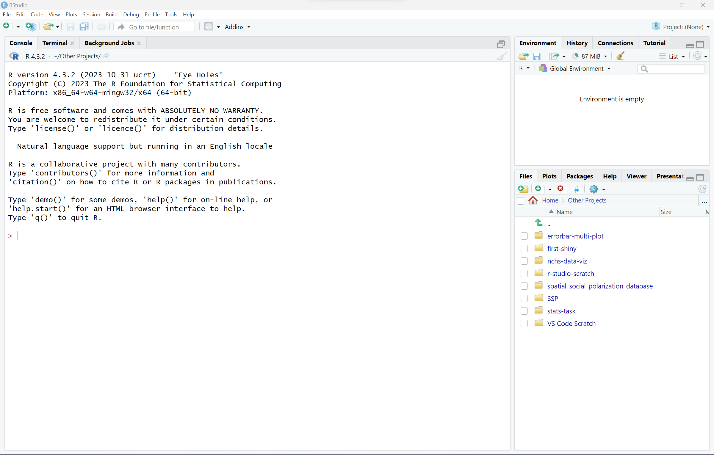
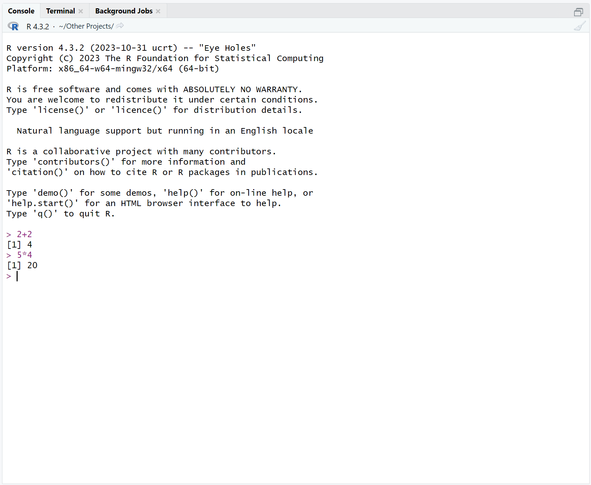
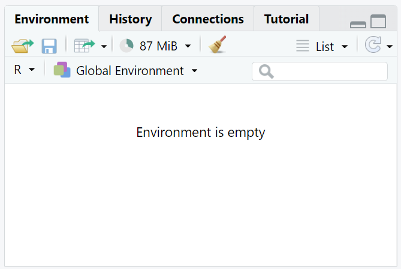
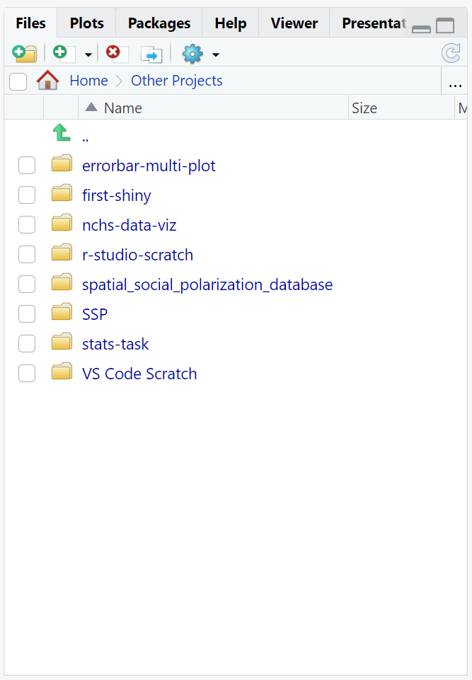
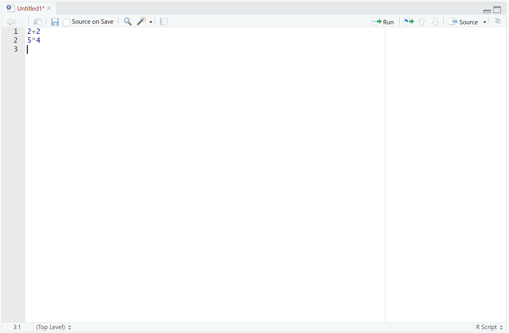

Install R and RStudio
This chapter
Just a quick definition of terms:
R - R is a program that runs on your computer to process data, run analyses, make figures, and do much, much more. You can run R on its own, but it is all text-based. When something is text based, it is sometimes hard to stay organized.
RStudio - RStudio is a program that runs on top of R. It gives you a nice, pretty work environment. It makes it easy to see the code you are writing, how R is running, any images you have created, what variables you have stored, and much more! Working in R without RStudio is possible and happens in large data centers, but RStudio makes life much easier.
Step 1: Install R
To install R, you will use the Comprehensive R Archive Network (CRAN). Click on that link or type cran.r-project.org into your browser.
At the top of this website, you will see a list of installation links.
- If you are using Mac: Click the link that says
Download R for macOS. You will see a page with download links that start withR-and end with.pkg. If you have a newer Mac that uses Apple’s processors (M1, M2, etc.), you will use the first link under the textFor Apple silicon. If you have an older Mac that uses an Intel processor, you will use the link underFor older Intel Macs. If you’re not sure which one you have, here’s a nifty tutorial on how to find that information on your computer. - If you are using Windows: Click the link that says
Download R for Windows. Then, click onbase. Then, click onDownload R for Windows. - If you are using Linux: Click the link that says
Download R for Linux. Then, select the distro you are using from the list. These links will bring you to a distro-specific tutorial for the commands need to download R.
After you have downloaded the correct file for your system, click on it. If you cannot find the file, check your “Downloads” folder or try step c again. It may take a little while for the file to download and install. After you click on it, you may need to say “Yes” to allow the file to be installed on your computer. Click through the installer using the default options. Eventually, the installer will say that R was successfully installed, and you should see R on your computer.
Step 2: Install RStudio

To install RStudio, you can click on this link or go to posit.co/download/rstudio-desktop in your browser.
Since we already installed R in the above step, you can use the button under 2: Install RStudio to get RStudio for your computer. The website should automatically detect what system you’re using and give you the right one, but all of the different installers are available on the page if you scroll down.
When it’s done downloading, click on the installer and follow the prompts. You may have to click “Yes” to allow it to run on your computer. Keep following the prompts using the default options until you finish the installation. Then, open RStudio by clicking on it.
Step 3: Check your work & take an RStudio Tour
- Click on RStudio to open it. It should look something like this:

If your RStudio does not look similar when you open it up, revisit steps 1 & 2 to see if something went wrong in the install. If you’re having trouble, search online for help or consult R installation guides.
- Let’s look around RStudio. The big section on the left hand side is the R console. When you downloaded R in step 1, that is what you downloaded! It has all of the power of R, and everything else on your screen is just trying to make your life easier. The
>means that R is ready to accept a command. Feel free to click in there and ask it some math problems like2+2or5*4just to make sure it is really working. You can see at the top of that big pane are the tabs “Console”, “Terminal”, and “Background Jobs”. We will only be using the “Console” in this class, but it is good to know that there are other things there!

Note: Depending on when you read this, the top line may not say R version 4.3.2 (2023-10-31 ucrt) -- "Eye Holes", especially if you’re reading this in the way future!!! The top line will always be the R version you are running. As long as it says R version and then some numbers, you are good to go.
- The top right pane is our “Environment”. This pane tells us about what we are working on in this project. When you save data sets or create variables, they will appear here in case you forget their names or what they contain. You can see there are other tabs in this pane too, but we will not use them in this course.

- The bottom right pane has a lot of useful stuff in it. We will go through several of these in the course as they can be really helpful when you are making figures or need help. The tab you are probably looking at now is “Files” which is useful to save and open your code. We will take a look at this pane in the early tutorials.

Note: Your files will not be the same as mine. However, you should have the same tabs at the top.
- There is actually a hidden 4th pane that appears when you are working on editing a file. Let’s create a new file to see that pane. In the top left hand corner of RStudio, click on File > New File > R Script. A new pane should appear above the Console. You can use this pane to write your code and save it for future use. Go ahead and add the same lines
2+2and5*4to this new file, and use the “Run” button for each line to send them to the Console. You can then use the blue disk/save button to save the code and send it to someone else or work on it later.

Congratulations! You have installed R and RStudio!